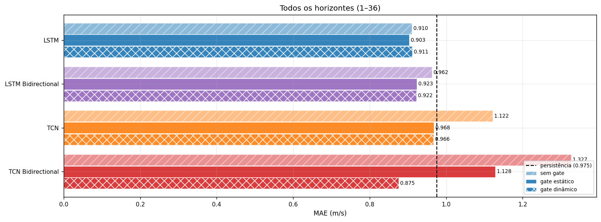
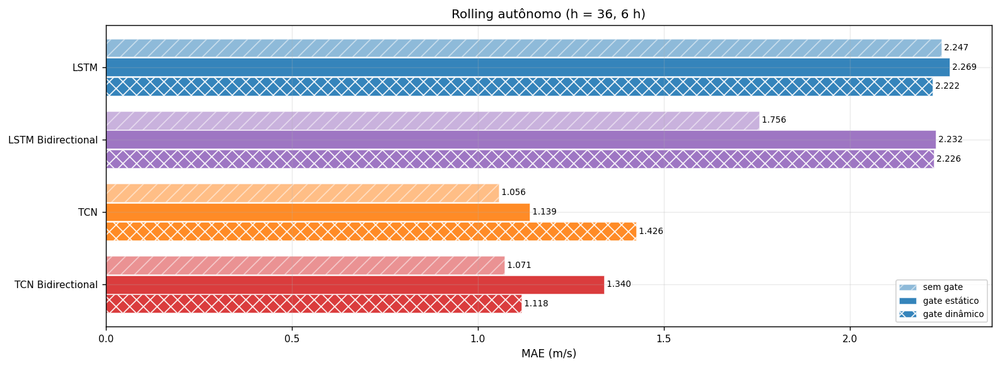
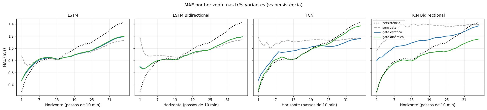
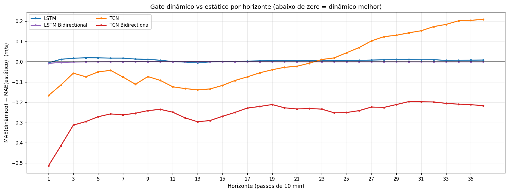
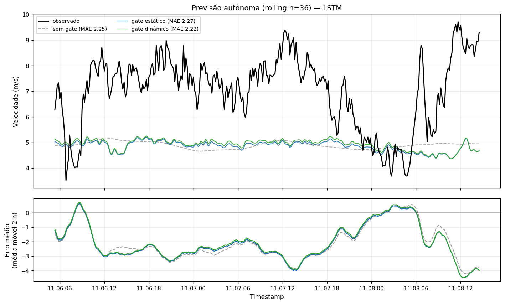
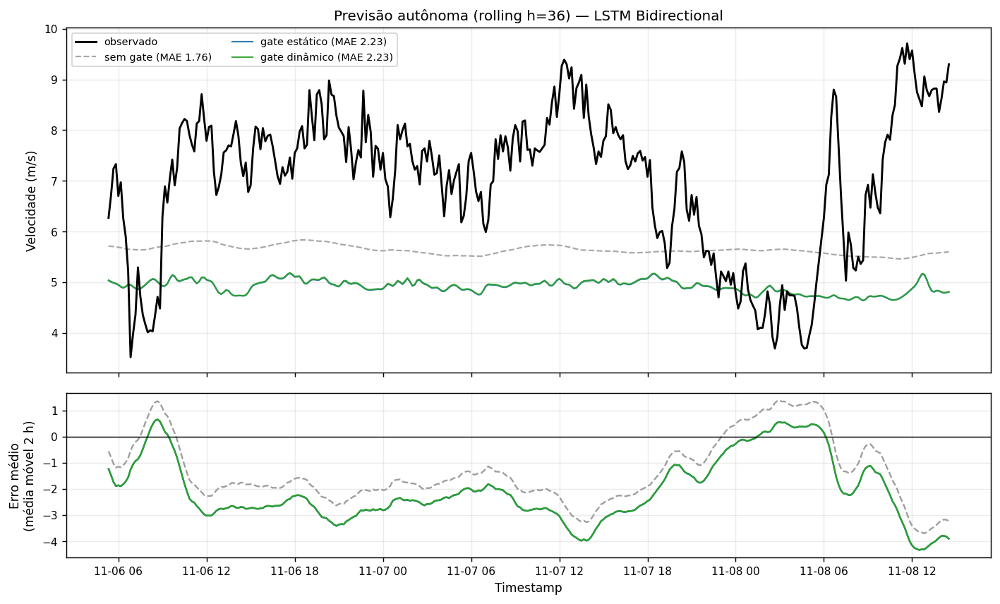
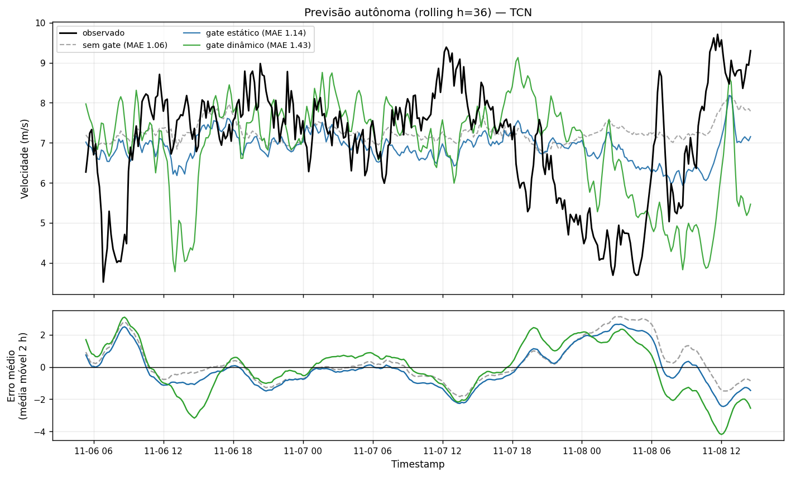
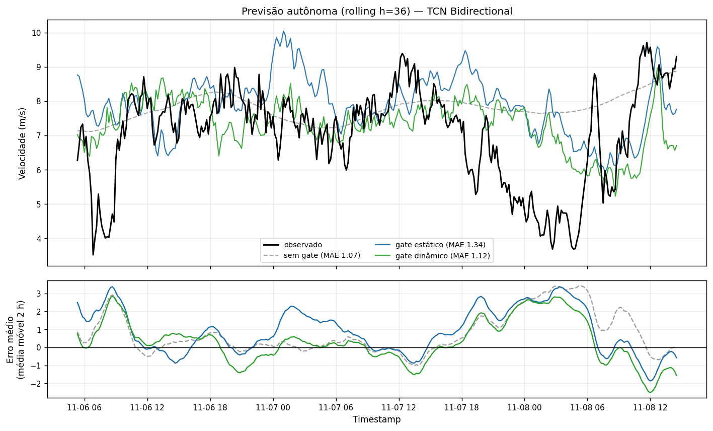
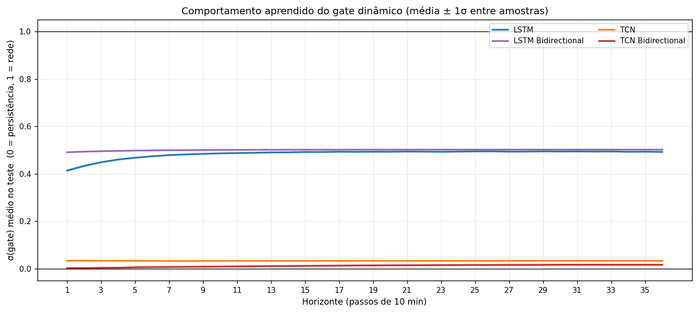

sem gate · gate estático · gate dinâmico · LSTM · LSTM Bidirectional · TCN · TCN Bidirectional · série LiDAR (dataset.csv) · protocolo step_evaluate · Keras/TensorFlow
g_h = σ(ℓ_h)) e gate dinâmico (g[t,h] = σ(W·f[t,h] + b_h), condicional às features do decoder com bias por horizonte). Cada variante foi treinada do zero e avaliada com o protocolo honesto (step_evaluate).g·previsto + (1−g)·persistência). O estático fixa um peso por horizonte para todas as amostras; o dinâmico deixa a rede decidir o peso em cada amostra e horizonte, dado o estado do decoder — e subsume o estático quando W = 0.

| Modelo | MAE denso (sem) | MAE denso (est.) | MAE denso (din.) | R² denso (sem) | R² denso (est.) | R² denso (din.) | MAE rolling (sem) | MAE rolling (est.) | MAE rolling (din.) | RMSE rolling (sem) | RMSE rolling (est.) | RMSE rolling (din.) |
|---|---|---|---|---|---|---|---|---|---|---|---|---|
| LSTM | 0,910 | 0,903 | 0,911 | 0,271 | 0,269 | 0,256 | 2,247 | 2,269 | 2,222 | 2,523 | 2,562 | 2,516 |
| LSTM Bidirectional | 0,962 | 0,923 | 0,922 | 0,183 | 0,245 | 0,246 | 1,756 | 2,232 | 2,226 | 1,971 | 2,520 | 2,514 |
| TCN | 1,122 | 0,968 | 0,966 | -0,217 | 0,121 | 0,122 | 1,056 | 1,139 | 1,426 | 1,392 | 1,406 | 1,821 |
| TCN Bidirectional | 1,327 | 1,128 | 0,875 | -0,568 | -0,056 | 0,304 | 1,071 | 1,340 | 1,118 | 1,512 | 1,688 | 1,457 |
| h | persist. | LSTM sem | LSTM est. | LSTM din. | LSTM Δd−e | LSTM Bidirectional sem | LSTM Bidirectional est. | LSTM Bidirectional din. | LSTM Bidirectional Δd−e | TCN sem | TCN est. | TCN din. | TCN Δd−e | TCN Bidirectional sem | TCN Bidirectional est. | TCN Bidirectional din. | TCN Bidirectional Δd−e |
|---|---|---|---|---|---|---|---|---|---|---|---|---|---|---|---|---|---|
| 1 | 0,281 | 0,880 | 0,476 | 0,471 | -0.005 | 1,183 | 0,701 | 0,693 | -0.008 | 1,187 | 0,472 | 0,306 | -0.166 | 0,963 | 0,794 | 0,281 | -0.513 |
| 2 | 0,444 | 0,755 | 0,559 | 0,571 | +0.012 | 0,969 | 0,662 | 0,658 | -0.003 | 1,078 | 0,584 | 0,469 | -0.115 | 1,026 | 0,854 | 0,440 | -0.414 |
| 3 | 0,553 | 0,722 | 0,626 | 0,643 | +0.017 | 0,888 | 0,678 | 0,676 | -0.002 | 1,047 | 0,640 | 0,583 | -0.056 | 1,100 | 0,858 | 0,545 | -0.312 |
| 4 | 0,620 | 0,738 | 0,681 | 0,701 | +0.020 | 0,872 | 0,712 | 0,711 | -0.001 | 1,106 | 0,711 | 0,637 | -0.074 | 1,118 | 0,907 | 0,611 | -0.295 |
| 5 | 0,690 | 0,766 | 0,734 | 0,753 | +0.019 | 0,874 | 0,749 | 0,749 | -0.001 | 0,994 | 0,764 | 0,713 | -0.050 | 1,194 | 0,945 | 0,674 | -0.271 |
| 6 | 0,745 | 0,789 | 0,774 | 0,792 | +0.018 | 0,877 | 0,777 | 0,777 | -0.000 | 1,040 | 0,831 | 0,789 | -0.042 | 1,220 | 0,977 | 0,720 | -0.257 |
| 7 | 0,782 | 0,811 | 0,806 | 0,824 | +0.018 | 0,878 | 0,797 | 0,797 | -0.000 | 1,075 | 0,892 | 0,816 | -0.076 | 1,271 | 1,017 | 0,755 | -0.262 |
| 8 | 0,803 | 0,824 | 0,825 | 0,838 | +0.013 | 0,878 | 0,808 | 0,808 | -0.000 | 1,069 | 0,944 | 0,833 | -0.111 | 1,269 | 1,033 | 0,779 | -0.254 |
| 9 | 0,817 | 0,829 | 0,836 | 0,848 | +0.012 | 0,878 | 0,818 | 0,818 | -0.000 | 1,117 | 0,931 | 0,858 | -0.073 | 1,395 | 1,037 | 0,796 | -0.241 |
| 10 | 0,827 | 0,836 | 0,847 | 0,855 | +0.007 | 0,872 | 0,821 | 0,821 | -0.000 | 1,115 | 0,937 | 0,845 | -0.092 | 1,396 | 1,044 | 0,810 | -0.235 |
| 11 | 0,827 | 0,835 | 0,849 | 0,850 | +0.001 | 0,867 | 0,817 | 0,817 | -0.000 | 1,131 | 0,944 | 0,820 | -0.123 | 1,350 | 1,054 | 0,805 | -0.249 |
| 12 | 0,824 | 0,822 | 0,838 | 0,836 | -0.002 | 0,862 | 0,815 | 0,815 | +0.000 | 1,117 | 0,951 | 0,819 | -0.133 | 1,352 | 1,071 | 0,794 | -0.277 |
| 13 | 0,820 | 0,810 | 0,826 | 0,821 | -0.005 | 0,857 | 0,810 | 0,810 | -0.000 | 1,106 | 0,958 | 0,820 | -0.139 | 1,400 | 1,090 | 0,794 | -0.296 |
| 14 | 0,834 | 0,816 | 0,825 | 0,824 | -0.001 | 0,855 | 0,818 | 0,818 | -0.000 | 1,106 | 0,966 | 0,832 | -0.134 | 1,399 | 1,104 | 0,814 | -0.290 |
| 15 | 0,873 | 0,840 | 0,841 | 0,842 | +0.001 | 0,869 | 0,848 | 0,848 | -0.000 | 1,115 | 0,985 | 0,868 | -0.117 | 1,379 | 1,119 | 0,850 | -0.269 |
| 16 | 0,908 | 0,853 | 0,853 | 0,853 | +0.001 | 0,881 | 0,873 | 0,872 | -0.000 | 1,120 | 0,994 | 0,902 | -0.093 | 1,383 | 1,130 | 0,880 | -0.250 |
| 17 | 0,930 | 0,861 | 0,859 | 0,862 | +0.003 | 0,891 | 0,884 | 0,884 | -0.000 | 1,131 | 0,999 | 0,925 | -0.075 | 1,400 | 1,126 | 0,898 | -0.228 |
| 18 | 0,958 | 0,874 | 0,868 | 0,872 | +0.004 | 0,900 | 0,908 | 0,908 | -0.000 | 1,133 | 1,004 | 0,949 | -0.055 | 1,396 | 1,132 | 0,912 | -0.221 |
| 19 | 0,992 | 0,892 | 0,888 | 0,893 | +0.005 | 0,917 | 0,926 | 0,926 | -0.000 | 1,137 | 1,023 | 0,983 | -0.040 | 1,386 | 1,142 | 0,931 | -0.211 |
| 20 | 1,021 | 0,905 | 0,903 | 0,908 | +0.005 | 0,924 | 0,943 | 0,942 | -0.000 | 1,141 | 1,032 | 1,004 | -0.027 | 1,383 | 1,159 | 0,932 | -0.227 |
| 21 | 1,038 | 0,917 | 0,917 | 0,923 | +0.006 | 0,939 | 0,951 | 0,950 | -0.000 | 1,142 | 1,041 | 1,018 | -0.022 | 1,378 | 1,174 | 0,942 | -0.233 |
| 22 | 1,056 | 0,922 | 0,927 | 0,932 | +0.005 | 0,951 | 0,959 | 0,958 | -0.001 | 1,139 | 1,045 | 1,038 | -0.007 | 1,370 | 1,177 | 0,946 | -0.230 |
| 23 | 1,074 | 0,924 | 0,938 | 0,943 | +0.005 | 0,960 | 0,966 | 0,965 | -0.001 | 1,139 | 1,040 | 1,051 | +0.011 | 1,370 | 1,181 | 0,948 | -0.234 |
| 24 | 1,081 | 0,926 | 0,946 | 0,951 | +0.005 | 0,967 | 0,967 | 0,966 | -0.001 | 1,136 | 1,035 | 1,054 | +0.019 | 1,370 | 1,193 | 0,941 | -0.252 |
| 25 | 1,097 | 0,943 | 0,963 | 0,968 | +0.005 | 0,980 | 0,983 | 0,983 | -0.001 | 1,133 | 1,032 | 1,076 | +0.044 | 1,354 | 1,202 | 0,951 | -0.250 |
| 26 | 1,127 | 0,969 | 0,987 | 0,994 | +0.007 | 1,000 | 1,009 | 1,009 | -0.001 | 1,131 | 1,031 | 1,101 | +0.070 | 1,352 | 1,204 | 0,963 | -0.241 |
| 27 | 1,168 | 0,986 | 1,010 | 1,018 | +0.008 | 1,014 | 1,034 | 1,033 | -0.001 | 1,125 | 1,035 | 1,138 | +0.103 | 1,360 | 1,210 | 0,986 | -0.223 |
| 28 | 1,198 | 1,004 | 1,030 | 1,039 | +0.009 | 1,027 | 1,054 | 1,053 | -0.001 | 1,131 | 1,047 | 1,170 | +0.124 | 1,371 | 1,226 | 1,001 | -0.225 |
| 29 | 1,227 | 1,026 | 1,056 | 1,067 | +0.011 | 1,046 | 1,077 | 1,076 | -0.001 | 1,136 | 1,065 | 1,195 | +0.130 | 1,372 | 1,240 | 1,028 | -0.211 |
| 30 | 1,257 | 1,048 | 1,083 | 1,094 | +0.011 | 1,067 | 1,101 | 1,100 | -0.001 | 1,143 | 1,082 | 1,224 | +0.143 | 1,370 | 1,254 | 1,057 | -0.197 |
| 31 | 1,298 | 1,071 | 1,109 | 1,118 | +0.009 | 1,086 | 1,123 | 1,123 | -0.001 | 1,148 | 1,102 | 1,255 | +0.153 | 1,377 | 1,276 | 1,079 | -0.197 |
| 32 | 1,337 | 1,089 | 1,134 | 1,145 | +0.010 | 1,104 | 1,145 | 1,144 | -0.001 | 1,156 | 1,123 | 1,297 | +0.173 | 1,386 | 1,299 | 1,100 | -0.198 |
| 33 | 1,369 | 1,103 | 1,158 | 1,165 | +0.006 | 1,117 | 1,157 | 1,156 | -0.001 | 1,163 | 1,139 | 1,323 | +0.184 | 1,387 | 1,323 | 1,117 | -0.205 |
| 34 | 1,394 | 1,116 | 1,174 | 1,182 | +0.008 | 1,126 | 1,174 | 1,173 | -0.001 | 1,165 | 1,146 | 1,347 | +0.202 | 1,387 | 1,344 | 1,135 | -0.209 |
| 35 | 1,409 | 1,121 | 1,183 | 1,191 | +0.008 | 1,132 | 1,178 | 1,177 | -0.001 | 1,163 | 1,153 | 1,357 | +0.204 | 1,389 | 1,354 | 1,143 | -0.212 |
| 36 | 1,426 | 1,131 | 1,190 | 1,198 | +0.008 | 1,140 | 1,190 | 1,189 | -0.001 | 1,165 | 1,161 | 1,370 | +0.209 | 1,390 | 1,371 | 1,154 | -0.217 |
| h | LSTM sem | LSTM est. | LSTM din. | LSTM Bidirectional sem | LSTM Bidirectional est. | LSTM Bidirectional din. | TCN sem | TCN est. | TCN din. | TCN Bidirectional sem | TCN Bidirectional est. | TCN Bidirectional din. |
|---|---|---|---|---|---|---|---|---|---|---|---|---|
| 1 | 0,340 | 0,792 | 0,802 | -0,351 | 0,521 | 0,532 | -0,298 | 0,799 | 0,918 | -0,098 | 0,484 | 0,928 |
| 2 | 0,471 | 0,714 | 0,705 | 0,060 | 0,567 | 0,572 | -0,101 | 0,678 | 0,804 | -0,157 | 0,380 | 0,821 |
| 3 | 0,507 | 0,642 | 0,622 | 0,232 | 0,563 | 0,565 | -0,137 | 0,617 | 0,691 | -0,298 | 0,352 | 0,726 |
| 4 | 0,495 | 0,578 | 0,554 | 0,299 | 0,540 | 0,542 | -0,263 | 0,527 | 0,626 | -0,324 | 0,279 | 0,657 |
| 5 | 0,461 | 0,513 | 0,486 | 0,320 | 0,503 | 0,503 | -0,026 | 0,450 | 0,537 | -0,453 | 0,218 | 0,584 |
| 6 | 0,422 | 0,449 | 0,423 | 0,322 | 0,461 | 0,461 | -0,114 | 0,333 | 0,444 | -0,475 | 0,160 | 0,520 |
| 7 | 0,389 | 0,401 | 0,376 | 0,320 | 0,427 | 0,427 | -0,188 | 0,223 | 0,390 | -0,619 | 0,088 | 0,470 |
| 8 | 0,367 | 0,367 | 0,345 | 0,319 | 0,402 | 0,402 | -0,195 | 0,110 | 0,357 | -0,618 | 0,052 | 0,436 |
| 9 | 0,350 | 0,341 | 0,322 | 0,315 | 0,378 | 0,378 | -0,311 | 0,121 | 0,304 | -0,863 | 0,025 | 0,402 |
| 10 | 0,340 | 0,324 | 0,309 | 0,312 | 0,359 | 0,359 | -0,314 | 0,094 | 0,286 | -0,852 | -0,004 | 0,374 |
| 11 | 0,341 | 0,323 | 0,311 | 0,312 | 0,349 | 0,349 | -0,354 | 0,072 | 0,283 | -0,751 | -0,014 | 0,363 |
| 12 | 0,353 | 0,336 | 0,327 | 0,317 | 0,350 | 0,350 | -0,323 | 0,055 | 0,285 | -0,732 | -0,019 | 0,370 |
| 13 | 0,366 | 0,354 | 0,346 | 0,322 | 0,353 | 0,353 | -0,305 | 0,043 | 0,290 | -0,776 | -0,026 | 0,374 |
| 14 | 0,371 | 0,364 | 0,358 | 0,321 | 0,349 | 0,349 | -0,295 | 0,051 | 0,284 | -0,763 | -0,025 | 0,363 |
| 15 | 0,362 | 0,359 | 0,354 | 0,311 | 0,333 | 0,333 | -0,284 | 0,053 | 0,256 | -0,696 | -0,036 | 0,344 |
| 16 | 0,350 | 0,349 | 0,345 | 0,298 | 0,314 | 0,314 | -0,283 | 0,056 | 0,226 | -0,677 | -0,050 | 0,322 |
| 17 | 0,338 | 0,339 | 0,334 | 0,285 | 0,296 | 0,296 | -0,285 | 0,050 | 0,198 | -0,698 | -0,040 | 0,304 |
| 18 | 0,328 | 0,329 | 0,324 | 0,273 | 0,281 | 0,281 | -0,270 | 0,055 | 0,172 | -0,682 | -0,048 | 0,287 |
| 19 | 0,314 | 0,313 | 0,307 | 0,258 | 0,264 | 0,265 | -0,255 | 0,058 | 0,143 | -0,648 | -0,057 | 0,271 |
| 20 | 0,303 | 0,298 | 0,291 | 0,245 | 0,250 | 0,250 | -0,238 | 0,065 | 0,117 | -0,622 | -0,062 | 0,262 |
| 21 | 0,287 | 0,277 | 0,270 | 0,230 | 0,232 | 0,233 | -0,223 | 0,064 | 0,086 | -0,605 | -0,075 | 0,249 |
| 22 | 0,272 | 0,256 | 0,247 | 0,215 | 0,215 | 0,216 | -0,207 | 0,064 | 0,056 | -0,584 | -0,089 | 0,234 |
| 23 | 0,258 | 0,235 | 0,225 | 0,201 | 0,199 | 0,199 | -0,198 | 0,064 | 0,026 | -0,564 | -0,098 | 0,223 |
| 24 | 0,247 | 0,218 | 0,207 | 0,189 | 0,186 | 0,186 | -0,191 | 0,060 | 0,006 | -0,550 | -0,108 | 0,216 |
| 25 | 0,240 | 0,206 | 0,195 | 0,180 | 0,177 | 0,178 | -0,188 | 0,059 | -0,006 | -0,529 | -0,120 | 0,213 |
| 26 | 0,230 | 0,192 | 0,179 | 0,168 | 0,166 | 0,167 | -0,179 | 0,061 | -0,024 | -0,514 | -0,126 | 0,213 |
| 27 | 0,218 | 0,174 | 0,160 | 0,155 | 0,153 | 0,153 | -0,172 | 0,058 | -0,046 | -0,513 | -0,140 | 0,205 |
| 28 | 0,200 | 0,151 | 0,136 | 0,138 | 0,132 | 0,133 | -0,173 | 0,049 | -0,079 | -0,517 | -0,161 | 0,192 |
| 29 | 0,174 | 0,119 | 0,103 | 0,115 | 0,104 | 0,104 | -0,176 | 0,031 | -0,123 | -0,520 | -0,192 | 0,167 |
| 30 | 0,141 | 0,078 | 0,061 | 0,088 | 0,066 | 0,067 | -0,184 | 0,006 | -0,183 | -0,527 | -0,227 | 0,133 |
| 31 | 0,102 | 0,031 | 0,013 | 0,056 | 0,023 | 0,025 | -0,192 | -0,022 | -0,254 | -0,543 | -0,270 | 0,094 |
| 32 | 0,065 | -0,013 | -0,032 | 0,027 | -0,017 | -0,016 | -0,200 | -0,050 | -0,321 | -0,560 | -0,312 | 0,058 |
| 33 | 0,035 | -0,049 | -0,068 | 0,003 | -0,050 | -0,049 | -0,202 | -0,071 | -0,377 | -0,568 | -0,339 | 0,024 |
| 34 | 0,013 | -0,077 | -0,096 | -0,016 | -0,074 | -0,073 | -0,199 | -0,084 | -0,419 | -0,561 | -0,354 | -0,003 |
| 35 | -0,006 | -0,100 | -0,120 | -0,032 | -0,096 | -0,094 | -0,194 | -0,095 | -0,455 | -0,553 | -0,368 | -0,027 |
| 36 | -0,028 | -0,129 | -0,148 | -0,050 | -0,120 | -0,119 | -0,191 | -0,106 | -0,496 | -0,540 | -0,385 | -0,058 |






